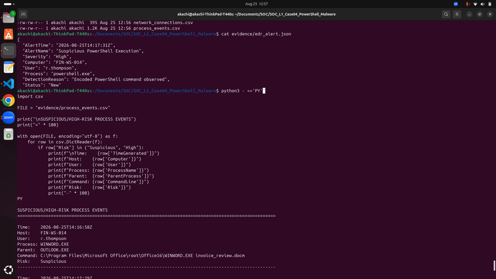
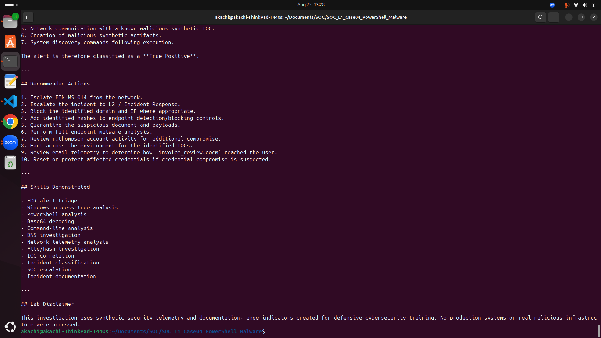

Case 01
Investigated endpoint alerts involving credential-access behavior and suspicious PowerShell execution using Microsoft Defender and supporting log analysis. The work distinguishes directly observed evidence from telemetry that could not be fully correlated.


Case 02
Analyzed authentication telemetry for repeated failed logons, a subsequent successful authentication, suspicious source activity and potential account compromise. The case demonstrates event correlation and escalation reasoning.
Case 03
Correlated email, attachment, DNS, proxy, identity sign-in and IOC-enrichment evidence to determine whether the user interacted with malicious infrastructure and whether follow-on compromise was supported.
Case 04
A high-severity EDR investigation involving encoded PowerShell, suspicious Office-to-PowerShell process execution, payload retrieval, file creation, network communication and system-discovery behavior.


Case 05
The supplied audit evidence supported a confirmed Microsoft 365 account compromise/BEC assessment. The correlated session contained 153 audit events and included mailbox access, a concealment-focused inbox rule, SharePoint searching and successful file downloads, outbound impersonation, and deletion of the recipient's reply.
correlated suspicious-session audit events
successful FileDownloaded audit records
incident severity